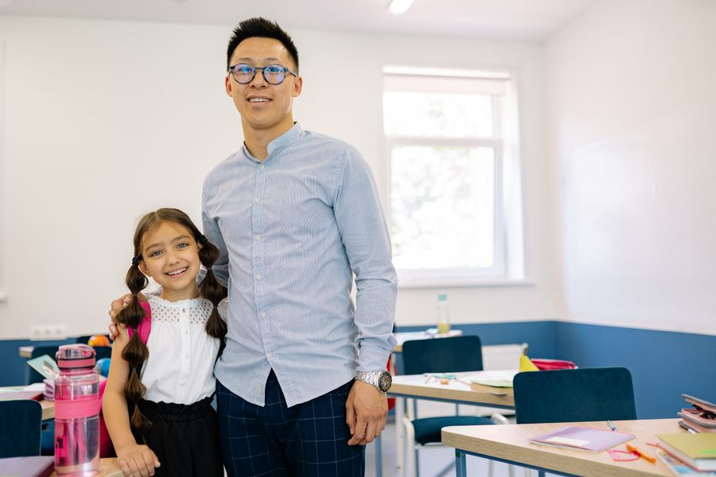
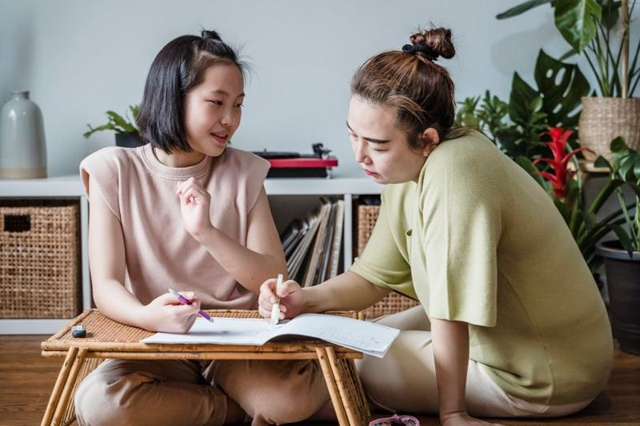
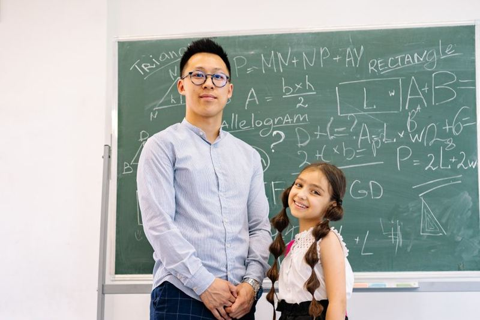

楽しむ子は伸びる。
中学受験
明倫館
NEW
卒業生の口コミNEW

体験授業
無料・随時受付中
お問い合わせはこちら
03-5399-5979
（14時〜19時 日曜は除く）
お問い合わせは
こちら
こちら
Interview
vol.01
「学び続ける癖」は、
明倫館でついた。
卒業して3年。中学生活にもすっかり慣れたAさんの、お母さま。
あの頃と同じ教室を久しぶりに訪ねていただき、
明倫館で過ごした4年間を振り返っていただきました。
語り手：Aさんのお母さま
卒業生 Aさん（2023年卒・○○中学 進学）
2026.9.15 公開 ｜ 取材・構成：ライター ○○さん（卒業生保護者）

教室にて（※写真はフリー素材によるイメージです。実際は取材時の撮り下ろし写真を使用します）
入塾のきっかけは、通りから覗いた教室でした
小学3年生の冬、習い事の帰りに教室の窓を覗いた娘が「ここに行きたい」と言い出したのが始まりでした。体験授業の日、家に帰るなり夕食の間ずっと「つるかめ算」の解き方を説明してくれたのを覚えています。入塾面談でも先生は、娘が電車の路線図を眺めるのが好きだと知ると「なら速さの単元で伸びますよ」と。成績表ではなく、この子自身を見てくれる塾なのだと感じた瞬間でした。

聞き手の塾長と。3年ぶりの教室に、自然と笑顔がこぼれる

当時の思い出話に、親子の会話も弾む
つらかった6年生の秋、先生の一言に救われました
6年生の10月、模試の偏差値が4つ下がり、娘が初めて「やめたい」と泣いた夜がありました。翌日、先生は成績の話を一切せず「いま一番好きな単元はどれ？」とだけ。「速さ」と答えた翌週から、授業前の10分間、娘のためだけに速さの一行問題を用意してくださいました。1か月後に算数が得点源に戻ったとき、娘の表情も戻っていました。面談での「大丈夫、最後まで伸びます」の一言には、親の私のほうが救われました。

当時と同じ黒板の前で、塾長と。「この教室に戻ってくると、あの頃を思い出します」
卒業して3年、いまも残る「学び続ける癖」
進学して3年経ったいまも、中間テストが近づくと、娘は受験期と同じ週間計画表をリビングの壁に貼ります。英単語の暗記は、社会の年号で使っていた緑シートのやり方そのまま。先日久しぶりに教室を訪ねると、先生は当時の模試の成績表をまだ保管してくださっていました。合格という結果以上に、「学び続ける癖」が残ったこと。それが明倫館が娘にくれた、一番の贈り物だと思います。
Profile
語り手：Aさんのお母さま
娘のAさんは小学3年生の冬に入塾し、4年間を明倫館で過ごして○○中学に進学。現在は中学3年生。お弁当づくりと送り迎えで、母として4年間の受験生活に伴走した。